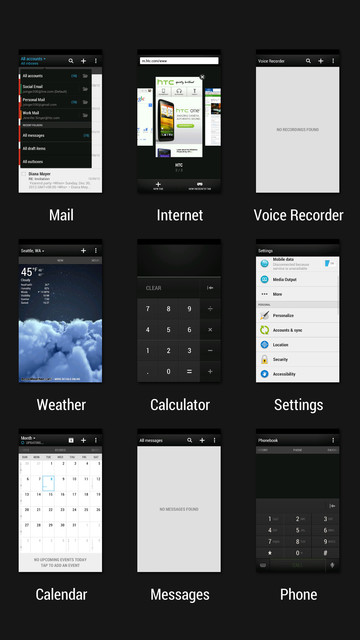

Switching between recently opened apps
When you're multitasking and using different apps on [generic phone name], you can easily switch between the apps you've recently opened.
Double-tap  to see recently-opened apps.
to see recently-opened apps.
to see recently-opened apps.

- To switch back to an app, just tap it.
- To remove an app from the list, drag it up.